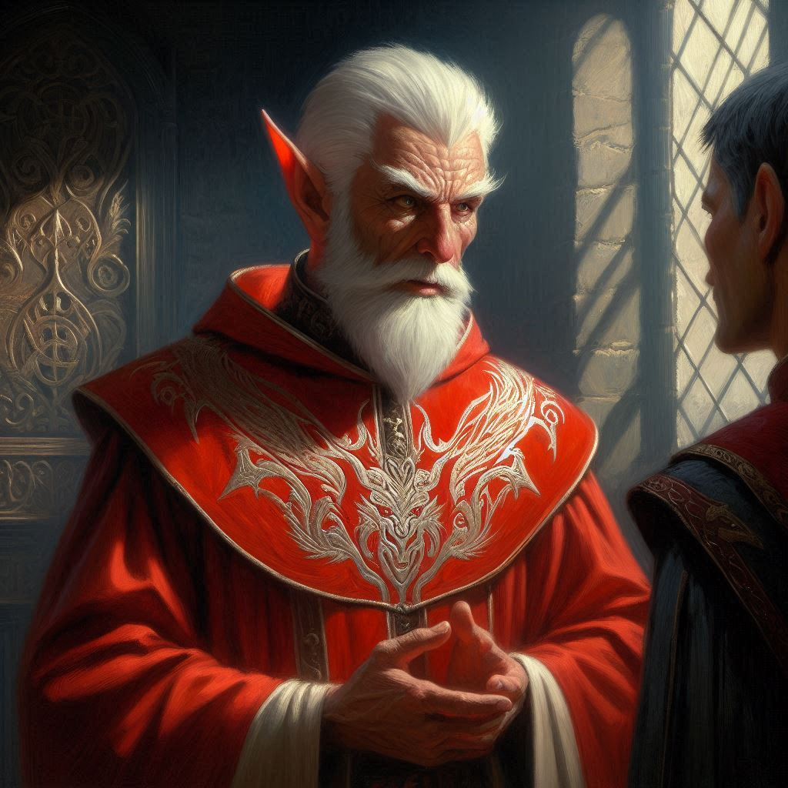
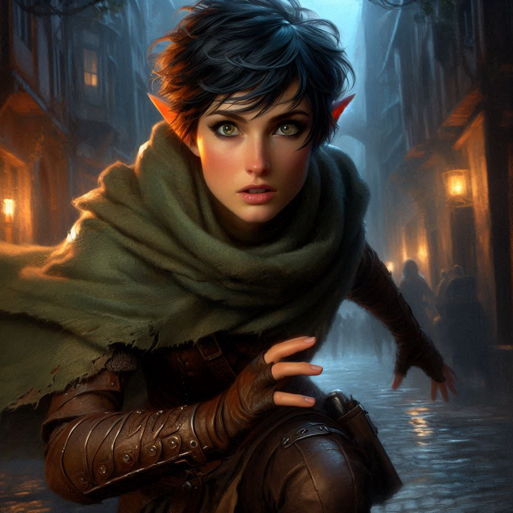

Secrets of the Ministry
The streets of Belladonna are quieter than usual, casting long shadows as dusk creeps in. You pull the hood of your cloak tighter around your face, hiding the recognition that could betray your mission. You’ve chosen not to tell anyone—not even Elias—about your decision to investigate the Trade Ministry. This is something you must do alone. Besides, Elias would only try to stop you, and you can’t afford distractions.
The imposing stone walls of the Trade Ministry loom ahead, draped in banners bearing the sigil of Yew’s royal family—a family you now know is being blackmailed. But there is more to uncover, and Varis, the Trade Minister, is at the center of it. You need to find out how deep his corruption runs. The whispers you’ve heard, the strange happenings across the kingdom, they all seem connected. And if there’s one thing you’re sure of, it’s that Jorsh, wherever he is, is caught in the middle of it too.
You approach the Ministry through a side alley, ducking past a pair of guards as they exchange banter, oblivious to your presence. The years of ranger training have honed your stealth, and for now, you trust your instincts. Disguised in simple trader’s garb, you make your way inside, blending with the crowd. The Ministry is bustling—merchants, officials, and guards crisscross the main hall, their voices echoing in the vaulted ceilings.
Your heart pounds in your chest, but you press forward, slipping down a side corridor. You scan for anything that might hint at Varis’s dealings. After a tense search, you find a partially ajar door leading to a small study. You slip inside, your senses on high alert.
From the shadows of the study, you hear voices just beyond a heavy curtain. One of them is unmistakable—Varis. His deep voice cuts through the air like a blade. You inch closer, pressing yourself against the wall, listening to their conversation.
“The royal family will remain under our control as long as I hold this over them,” Varis says, a sneer in his voice. “Yew’s throne is as good as mine. And once we secure the treasure in Hemlock Caverns, Princess Hawthorn won’t have a choice but to bow to me.”
Your breath catches in your throat. Varis isn’t just blackmailing the royal family—he’s planning a coup. Worse, you now know that Princess Hawthorn is hunting the treasure in Hemlock Caverns, the same treasure Jorsh seeks. A surge of panic rises in you. You have to get to the treasure before they do. If Jorsh falls into their hands, or worse, if he joins forces with them, everything could be lost.
But there’s more. One of the Trade Minister’s advisors speaks up. “My Lord, do you think they suspect you are a prince of the Shadow Realm?”
Varis’s voice grows lower, his words chilling you to the bone. “Silence your tongue, you fool,” he hisses. “I told you not to speak of this in the open. There may be prying ears around any corner.”
“Of course, my Lord,” the advisor says with a bow. “You should know that the mercenaries are being assembled to collect the dwarf and the half-orc blacksmith.”
“You are behind schedule. Yaldaboath will not wait patiently for the sacrifice. Make it happen, now,” Varis growls in a low, rumbling voice.
The room spins for a moment. Varis, the corrupt Trade Minister, is not just a man drunk on power—he’s a dark elf prince in disguise. Your heart races, your mind reeling. The dark elves… Could they be behind all of this? Could they be the true threat to Belladonna? And what is this talk of using a half-orc and a dwarf as a sacrifice? Could they really be speaking of Baider and Onyx?
Suddenly, a creak from the hallway pulls you out of your thoughts. You freeze, realizing too late that you’re not alone. Two mercenaries—soldiers in Varis’s employ—step into the study.
"Hey, you!" one of them shouts.
You dart for the door, your feet barely touching the ground as you race down the corridor. You can hear their heavy footsteps behind you, closing in fast. You have to escape. If they catch you, everything will be lost—your mission, the truth about Varis, and perhaps your life.
You burst through a side exit into the alleyway, but the streets are no longer your safe haven. The guards have been alerted, and you can see them forming up ahead. Your mind races. You can’t lead them back to Baider or Onyx. You’ve put them in enough danger already.
For now, the only option is to hide, to vanish into the city’s maze of alleys and rooftops, biding your time. But your heart is heavy. You’ve uncovered a dark secret, but it’s not enough. Varis is a greater threat than you imagined. And you’re the only one who can stop him.
As you catch your breath in the shadows, a thought crosses your mind. Should you head back to warn Onyx and Baider, or continue on this dangerous path alone? Perhaps you could find an ally within the royal palace to stop this madness. Every decision feels heavier now, as though the fate of Belladonna itself rests on your shoulders.